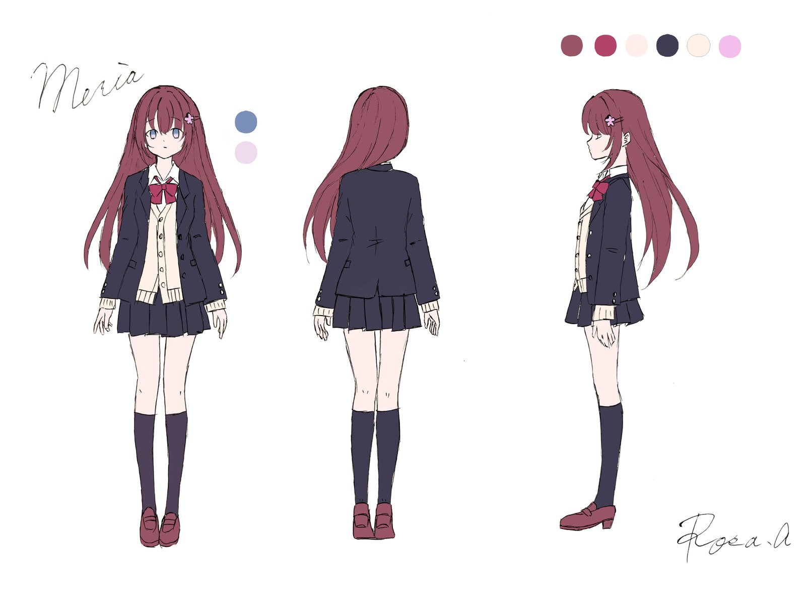
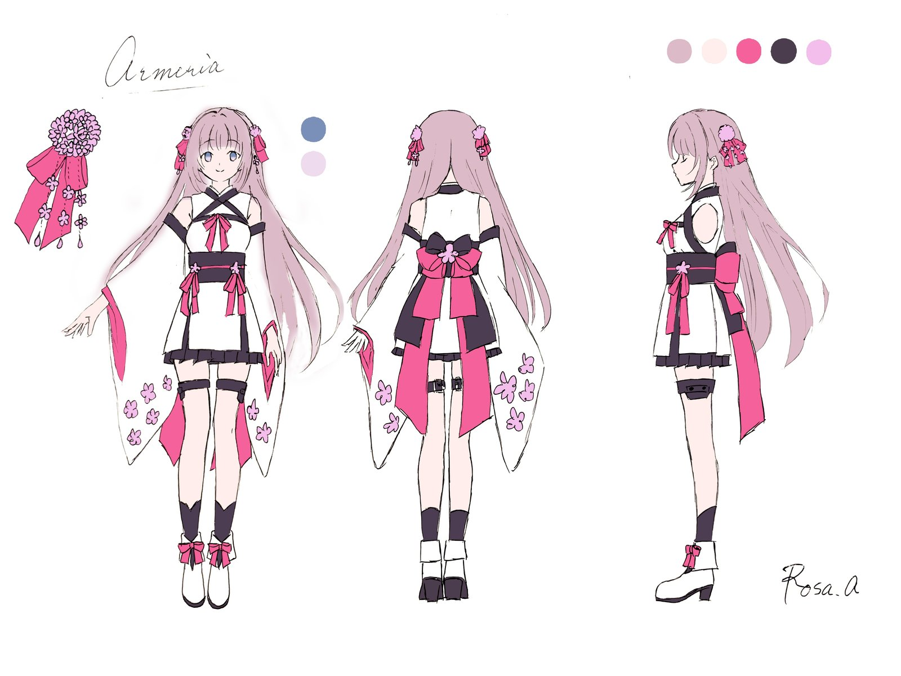
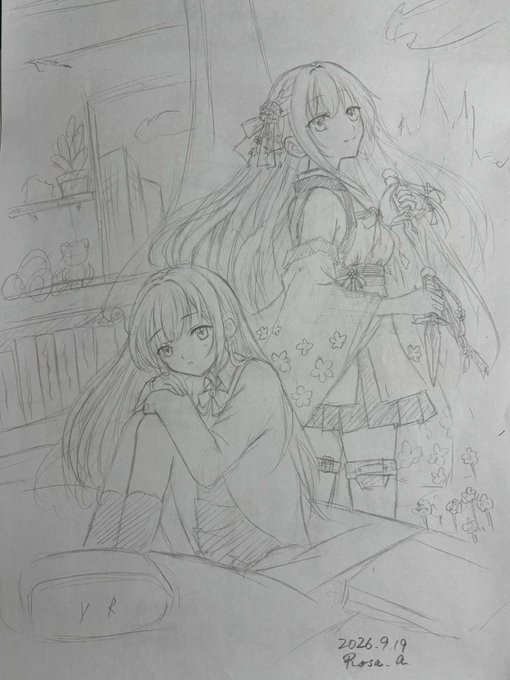

制作資料：AI生成ドラフト（未修正）
գրել
ちゃっぴーのセッション名に混入した、これ何？
『書く』という意味のアルメニア語です
ろーさ・心の声（アルメニア……。聞いたことがあるような……アルメリアか）
アルメリアって花あるよね。
桜や椿みたいに、人名に使われる？
実在の歴史人物よりも、ファンタジー作品やSF作品のキャラクター名（王女、ヒロインなど）として使われる機会が多く見られます。英語圏のポピュラーな女性名にアメリアがあります。
ろーさ・心の声（アルメリアとアメリア……。アルメニアは裏の顔……）
表はふつうの女の子、裏は怪盗みたいなアイディアある？
【キャラクター設定集】
表向きは「無害・ドジ・おっとり」、裏の顔は「冷徹・天才・圧倒的強者」
ちゃっぴーは、アイディアある？
不運少女と、これまでに出た他のギャップを組み合わせてみて
「③ 不運少女 × ゲーマー」が好きだった！
「想定内よ。だから――勝てる」
いくつか聞かせてね。
・世界観
・戦闘スタイル
・武器
・強敵の出方
・分量
・文体
・ファンタジー（剣と魔法）
・回避重視型
・短剣・ダガー
・イベント緊急発生
・15000字想定
・ライトノベル系
※ 文体の「ライトノベル系」は、最初の版を書かせた後に、文体違いとして追加で依頼したものです。下に掲載しているのはこのライトノベル風の版です。
ゲームの正式名称、台詞・戦闘の運びを補完して作成しました！
――ライトノベル風テイスト版――
朝である。
朝、というものは本来、爽やかであるべきだ。鳥が鳴き、パンが美味い。そういうものらしい。
「……あ」
芽莉愛のパンは、地面に落ちた。バターを塗った面から、律儀に。
「……はい……知ってた……」
もはやツッコミすら諦めた声で呟く。ちなみに、これは彼女にとって「よくあること」のカテゴリに入る。分類上は「軽度」。大丈夫、まだ午前七時、今日はこれからだ。
案の定、通学路では工事現場の放水にフルスイングで直撃した。雨、降っていない。晴天。にもかかわらず、である。
「……なんで……」
宇宙の采配に文句を言っても始まらないので、芽莉愛は濡れた靴下のまま登校した。
さて。ここで彼女のプロフィールをざっくり紹介しておこう。
・教室では文庫本を開いて気配を消すタイプ。
・話しかけられると変な間が空く。脳内では完璧な返答が用意できているのに、口からは「……うん」しか出てこない。
・忘れ物、電車遅延、すれ違いざまの肩ぶつけ、テストのヤマ外し――不運のフルコース、通年営業中。
友人からは「そういう星の下」と評されたことがあるが、否定材料はゼロだった。
「……えへ……」
力の抜けた笑い。これが芽莉愛の必殺技であり、唯一の防御スキルである。深刻に受け止めたら負け。不運は天気、慣れるが勝ち。
放課後。奇跡的に大きな不運もなく帰宅した芽莉愛は、制服のままベッドに座り、机の上の相棒――VRヘッドセットを手に取る。
これだけが、彼女にとって「勝てる」と確信できる時間だった。
Endless Frontier Online――略称：EFO。
ユーザー名：アルメリア。
ログイン中……。
視界がホワイトアウトし、次の瞬間には石造りの街並み。剣と魔法とドラゴンの世界。現実の湿った靴下は、もうどうでもいい。
「……よし」
装備確認。短剣二本、ポーチには回復薬と耐性スクロール。パーティは、今日も組まない。
理由は簡単。「迷惑をかけるかもしれない不安」が「一人で心細い不安」を、常に僅差で上回っているからだ。
「……メリアは、メリアのペースで、いく」
ゲートをくぐる。冒険、開幕。
茂みから、スライムが飛び出してきた。開幕一体目。早い。
「……はい、一体目」
このゲームには「エンカウント率」という隠しパラメータがある。多くのプレイヤーにとっては「まあまあ出る」程度らしいが、アルメリアに限っては体感三倍。歩けば湧く。座れば湧く。もはや湧き待ちしなくていい説すらある。
だが、ここでのアルメリアは嘆かない。むしろ、淡々とスライムを捌く。
半歩ずれる。躱す。斬る。消える。
「……はい、二体目」
次はゴブリン。棍棒を振りかぶって突進してくる――が、アルメリアはぎりぎりまで引きつけてから半身をひねり、するりと間合いの外へ。がら空きの背中に短剣が二閃、三閃。
「……はい、二体目、終わり」
律儀に実況しながら、次、また次。エンカウント率が高いということは、それだけ経験値効率もいいということ。他プレイヤーが一日かけて上げるレベルを、アルメリアは半日で追い抜く。
「……レベルだけは、無駄に高い」
自虐を挟みつつ、アルメリアの戦闘スタイルは基本、地味である。大魔法なし、豪快な一撃なし。ひたすら躱して、刺す。BGMがあるなら、たぶんローファイ。
しかし――ここに、彼女だけの隠しルールが存在する。
このゲーム、モンスターの攻撃には「クリティカル率」というものがあり、大抵は数パーセント。滅多に起きない、いわば宝くじレベルの確率だ。
だが、アルメリアの当たり判定は、宇宙の意地悪センサーと直結している。三パーセントだろうが、五パーセントだろうが、体感ほぼ百パーセントで貰う。統計学、完全崩壊。
だから彼女は「避ける」を全力でやりながら、「避けきれない一撃」の存在を、最初からスケジュールに組み込んでいる。
「……このゴブリン、そろそろ来る」
なんの根拠もない勘――のようで、実は数百戦分のデータに裏打ちされた、彼女だけの天気予報である。
案の定。
「会心の一撃！」
「……っ、来た、来た……知ってた……！」
痛みに顔をしかめつつ、すでに回復薬はスタンバイ済み。ダメージ直後、コンマ数秒のロスもなく喉へ流し込む。HPバー、即回復。
「……はい。想定通り。まだ、いける」
そして、待ち受ける、もう一つの試練――ドロップ運。
ゴブリンが消え、光の欠片が残る。拾い上げる瞬間、心のどこかで、ほんの少し期待してしまう自分がいる。今度こそ。今度こそは。
――「布切れ」を入手しました。
「……はい。知ってました」
レアドロップ率、ほぼゼロ。他プレイヤーが掲示板で「レア引けた！」と沸いている横で、アルメリアの倉庫には「布切れ」と「錆びた欠片」がタワーマンションを建設中である。
「……ま、いつものこと」
肩をすくめて、次のポップ地点へ。ちなみにこの時点で、時刻は夕方。フィールドは、まだ何も知らない。
そのとき、フィールド中にけたたましいアラートが鳴り響いた。
【緊急告知】期間限定イベント「災厄の侵犯」発生。高難度モンスター「深紅の暴竜」が、ランダムなフィールドに出現します。
「……は？」
嫌な予感というものは、たいてい当たる。少なくとも、芽莉愛の人生ではそうだ。
周囲のプレイヤーがチャットで一斉に騒ぎ出す。
「うそ、こんな低レベル帯に来た！？」
「逃げよ逃げよ！」
「パーティ組める人いない！？」
そう、本来は高レベル帯に出るはずの化け物イベントボスが、よりによって初心者フィールド――アルメリアが今いる、まさにこの場所に、出現してしまったのである。
「……あー」
乾いた声。驚きより先に、深い納得がやってきた。
「……メリアの、フィールドに、来る……よね。そういうもの、だよね……」
もはや天気予報が当たったくらいの感覚である。予報士「本日、あなたの周辺にのみ、局地的な絶望が降ります」。的中率、異常。
周りのプレイヤーは、我先にと撤退していく。誰もパーティを申し出ない。無理もない、レベル差十倍の相手だ。
アルメリアは、動かなかった。
「……逃げても、いい、けど」
短剣を構え直す。
「……どうせ、また、来る。今日じゃなくても、次でも。メリアには、いつか、来る。なら――今、ここで」
地平線の向こうから地響き。木々がなぎ倒され、土煙の中から現れたのは、全身を深紅の鱗で覆われた巨竜だった。
「深紅の暴竜」出現。推奨討伐レベル：本フィールド想定の約十倍。
「……うん。知ってた」
震えなかった。いつも通りの、淡々とした声だった。
尾の一薙ぎが、地面を割りながら迫る。
その時にはもう、アルメリアは軌道の外にいた。大跳躍での回避、着地即ダッシュ。
「……大きい図体、当たりやすいと思ったら、大間違い」
短剣が前脚に突き刺さる。硬い鱗にダメージは通らないが、ノーダメージで一撃入れた事実こそが重要だ。
竜の咆哮、続けて炎のブレス。回避不能に見える範囲攻撃――だが、モーションを見た瞬間、アルメリアは既に横っ跳びで安全圏。
「……よし。二撃目、回避」
普通なら、レベル差十倍の相手にパニック不可避である。だがアルメリアの声は、いつも通りだった。
「……いい？ メリア。この竜のクリティカル率、たぶん五パーセントくらい」
自分に言い聞かせるように。
「でも、五パーセントは、メリアにとっては百パーセント。だから――いつ来るか、じゃなくて。来る前提で、動く」
爪撃を躱しながら、戦闘開始時点で既に耐性スクロールを二重掛け。物理耐性、状態異常耐性。オーバースペックと名高い重ね掛けも、彼女にとっては通常営業。
「……いつ来る」
短剣で側面を斬りつけつつ、集中を研ぎ澄ませる。
「……たぶん、そろそろ」
竜が大きく振りかぶった。通常の一撃――のはずが、振り下ろしの速度が一瞬変わる。
「会心の一撃！」
来た。
だが、アルメリアは避けようとしなかった。避けられないと踏んだ上で、受けきる前提の体勢――重心を落とし、短剣の腹で衝撃を逃がす。
HPバー半減。
「……っ、来た、来た……知ってた……！」
同時に回復薬。コンマ数秒のロスもなく、光る雫が喉を通る。HPバー即回復。
「……はい。想定通り。まだ、いける」
竜が大技の反動で硬直したその一瞬。アルメリアはこれまで温存してきた全機動力を注ぎ込み、懐へ飛び込む。
一閃、二閃、三閃――喉元、目、翼の付け根。急所という急所を、迷いなく刻んでいく。
「……メリアは、避けるのは得意。でも、避けられないことも、知ってる。だから――」
四閃目。竜の咆哮が悲鳴に変わる。
「――避けられない分は、最初から、計算に入れておく。それだけ」
最後の一撃。額に短剣、深々。巨体が傾き、光の粒子となって崩れ落ちた。
「深紅の暴竜」を討伐しました。
フィールドに静寂が戻り、遠巻きに見ていたプレイヤーたちのチャットが一斉に沸く。
「え、今の一人で倒した！？」
「うそでしょ、レベル足りてなくない！？」
「アルメリアさん誰……強すぎ」
アルメリアは、それを横目に静かに息を吐く。
「……別に、強くはない。ただ、当たる前提で、生きてるだけ」
そして、ドロップした光の欠片を見下ろす。一つ、ぽつんと転がっている。
期待――しなかったといえば嘘になる。あれだけの強敵だ。ドロップ率も、多少は補正されているはず。多少は。
拾い上げる。
――「布切れ（上質）」を入手しました。
数秒の、完全な沈黙。
「……」
そして、いつもの脱力ボイス。
「……知ってましたぁ……」
怒る気力もない。むしろ安心すらしていた。ああ、やっぱりこうなるよな、と。強敵を倒しても結局「布切れ」。せめてもの慰めは「上質」の三文字である。
「……はは……まあ、そんなもんか」
短く笑って、フィールド端のベンチに腰掛ける。仮想世界の夕焼けが、視界いっぱいに広がっていた。
「……疲れた、けど。今日も、生き延びた」
ログアウトパネルに、指を伸ばす。
視界が現実に戻る。天井、ヘッドセットのランプ、窓の外はもう真っ暗。
「……疲れた」
声が、いつものたどたどしい調子に戻っている。
机の鞄からノートを取り出そうとして、手が滑って落とす。筆箱が飛び出し、シャーペンがベッドの下に消えていった。
「……あ」
いつもの調子である。芽莉愛は力の抜けた笑みを浮かべる。
「……えへ……」
拾いに行く気力もなく、しばらくベッドに寝転がる。
でも――と、ふと思う。さっきまでの自分は、もう少しだけ違う顔をしていた気がする。
現実では些細な不運にすら肩を落とし、人と話すのも苦手で、言葉に詰まって「……うん」しか言えない。
でもあの世界では、避けられない一撃が来るとわかっていても、怯まなかった。むしろそれを織り込んで、前に進むことができた。
「……メリアも、少しは、アルメリアみたいに、なれるのかな」
独り言のように呟いて、床に転がったシャーペンを見つめる。
「……いや、まあ。今は、いいか」
拾うのは明日でいい。今夜のところは、これくらいの不運で済んだのだから、上出来だ。
目を閉じる。明日もきっと、何かしらの不運が待っているだろう。それでも――「知ってました」と笑って受け流せるだけの余裕は、この日常にも、少しずつ根付き始めていた。
（了）
――なお、翌日もパンは地面に落ちた。

メリア（現実の姿）三面図

アルメリア（VR内の姿）三面図

構図ラフ（2026.9.19）
下書きを読んで思ったのは、「そうじゃない」でした。
芽莉愛は不運がデフォルトです。
だけど、不運に備えようとする子だ、そう思いました。
晴れの日でも何度も濡れた経験があるなら、降水確率0%でも傘を持っていくような。
そして、濡れて学校に行ったら世話焼きの子が拭きに来る。
来たのは、オネェなギャル君でした。（なぜ）
しかも、未来予知AIを作ろうとしていました。（だからなぜ）
展開の踏襲を避けようとしたら、暴竜は青い羽のグリフォンになりました。
ついでにドロップ品もしょぼくなった。（ごめん、芽莉愛）
同様にワールドチャットも、モニターに変更。
最後に、転がったシャーペン……をリップクリームに変更して。
それを拾おうとして、「負けない」宣言が出てきました。（かわいい）
説明が多いのがとにかく肌にあわなくて、全体的にゴリゴリ書き直しました。
大枠の流れ（日常→VR（雑魚→強敵）→日常）は踏襲しています。
ろーさが読みたかったものに何とかなりましたが。
とても面倒でした。
公開中です。